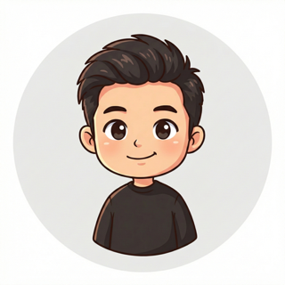

Zheren Dong
Building LLM training, retrieval, and data systems for coding agents.

I’m a research engineer on the AI Research Team at Augment Code, where I focus on post-training LLMs and data curation strategies that improve retrieval performance for coding agents in production.
My work includes training-data pipelines, distribution shifts, model onboarding, and evaluation. Outside of work, I pursue independent ML research; my recent work explores how spelling-aware embeddings can improve language modeling across benchmarks.
Previously, I worked at Applied Intuition and Rivos (now part of Meta).
News
| Jan 25, 2026 | New preprint on Spelling Bee Embeddings for Language Modeling is now on arXiv! 🎉 |
|---|
Publication

Spelling Bee Embeddings for Language Modeling
Experience
Member of Technical Staff, AI Research Team
- Retrieval performance and context engineering
- Embedding model training and data curation
- Model onboarding and evaluation
Software Engineer, Vehicle Platform Team
- Next-gen Software Defined Vehicle (SDV) platform
- Data infrastructure for vehicle telemetry and fleet health monitoring
- On-board runtime environment and applications
Member of Technical Staff
- Rust runtime support library for RISC-V system bootstrapping
- Rust-based DDR5 SPD decoder/encoder CLI tool per JEDEC standard (intern project in summer 2022)
Software Engineer Intern
- Redesigned TensorFlow-based user vector generation module in C++ for vector and tree-based deep match retrieval system
Education
M.S. Computer Science
B.S. Computer Science (Honors)
Skills
Languages
Python · C/C++ · Rust · Go · Java · TypeScript · SQL
ML & Data
PyTorch · TensorFlow · Ray · Spark · CUDA
Infrastructure
Kubernetes · Docker · GCP · AWS · BigTable · BigQuery · Kafka · Redis · PostgreSQL